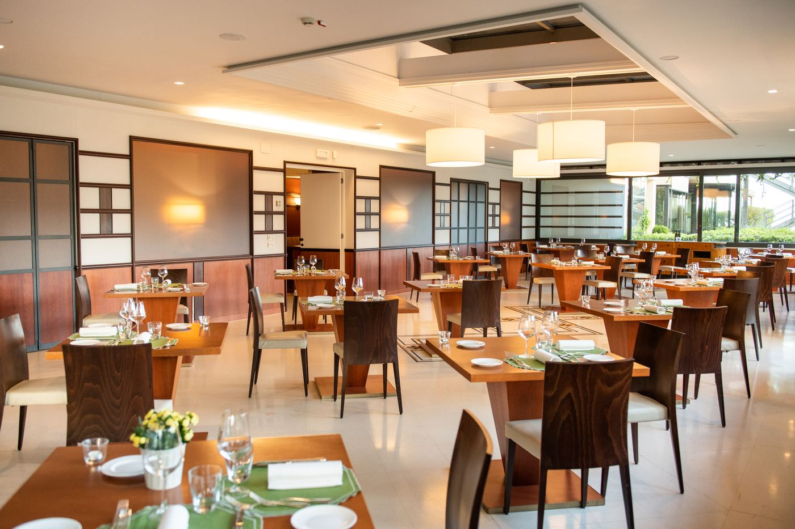
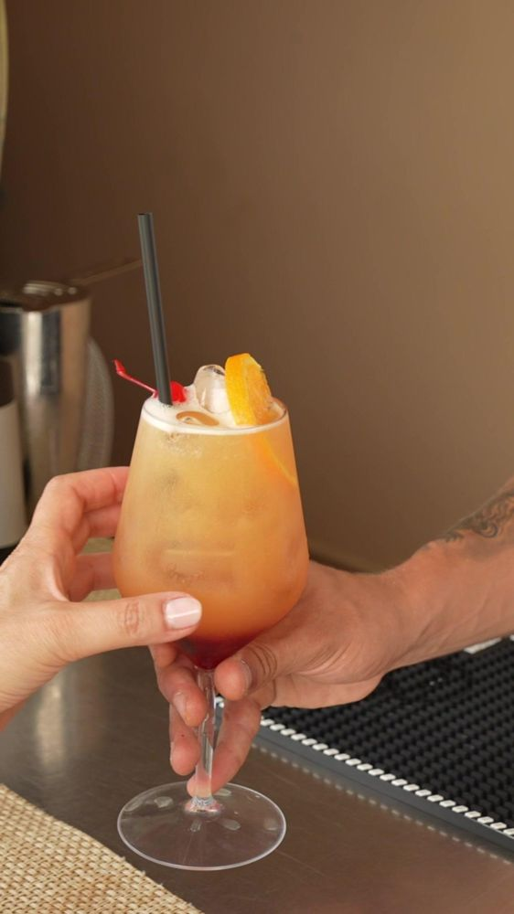

Ristorante
L'Abruzzo, a tavola.
Ricette locali, cene lunghe e una colazione per cui vale la pena alzarsi.

Mattina

Sera

Cena

Sala
Prenota un tavolo
Orari e prenotazioni.
Per orari, menu e prenotazioni, contatta la reception.
Il ristorante
L’Abruzzo a ogni pasto.
Il ristorante e la sua terrazza guardano la piscina e il parco, con la brezza del mare la sera. La cucina propone piatti italiani e specialità abruzzesi con prodotti locali, dalla colazione a buffet alla cena alla tavola dello chef.
Colazione
Un buffet locale con frutta fresca, torte, dolci e piatti salati, incluso nei pacchetti. Chi viaggia per lavoro può farla presto, prima della prima call.
Pranzo e cena
Cucina italiana à la carte e specialità abruzzesi, servite in sala o in terrazza sulla piscina. Lunghe cene in famiglia e cene di lavoro tranquille hanno entrambe il loro posto.
I sapori dell’Abruzzo
Aspettati la regione nel piatto: spaghetti alla chitarra, arrosticini, pesce dell’Adriatico, olio extravergine delle colline e un bicchiere di Montepulciano d’Abruzzo o Trebbiano. Il menu cambia con le stagioni.
La tavola dello chef
Per una serata speciale, o la cena dopo una partita di padel, la tavola dello chef è dove le conversazioni durano e nascono gli accordi.
Bar, aperitivo e spiaggia
Un aperitivo al bar dell’hotel prima di cena, o il pranzo sulla sabbia: il lido convenzionato ha il suo bar e ristorante per pranzi in spiaggia, aperitivi e serate d’estate.
La Bottega di Villa Maria
Il nostro angolo di prodotti locali e sapori abruzzesi, da gustare durante il soggiorno e da portare un po’ a casa.
Allergie e prenotazioni
Segnalaci allergie o diete quando prenoti, o scrivici un messaggio. Per orari e prenotazione del tavolo, chiedi al nostro team.
Galleria
Guarda prima di arrivare.


Domande frequenti
Utile da sapere prima di partire.
La colazione è inclusa?
La colazione è inclusa nei pacchetti ed è servita a buffet con prodotti locali. Gli ospiti Executive possono averla presto, prima della prima call.
Dove si trova Villa Maria Hotel & Spa?
Sulla collina sopra Francavilla al Mare, appena a sud di Pescara, in Abruzzo. L'aeroporto d'Abruzzo (Pescara) è a pochi minuti d'auto, la stazione di Pescara Centrale ha comodi collegamenti e l'uscita A14 Pescara Sud è vicina.
C'è il parcheggio?
Sì. Il parcheggio privato è gratuito per gli ospiti e ha la ricarica per auto elettriche.
Perché prenotare direttamente con l’hotel?
Hai il pacchetto esattamente come progettato, una persona vera prima e durante il soggiorno ed extra che non trovi sui portali, come il voucher da 20 € alla prima prenotazione diretta con lo Sconto Famiglia.